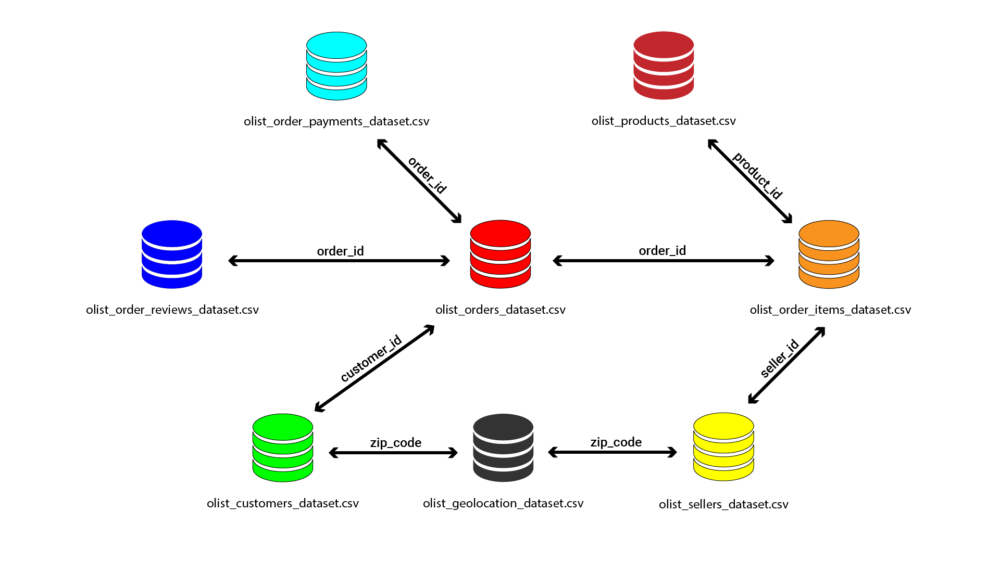
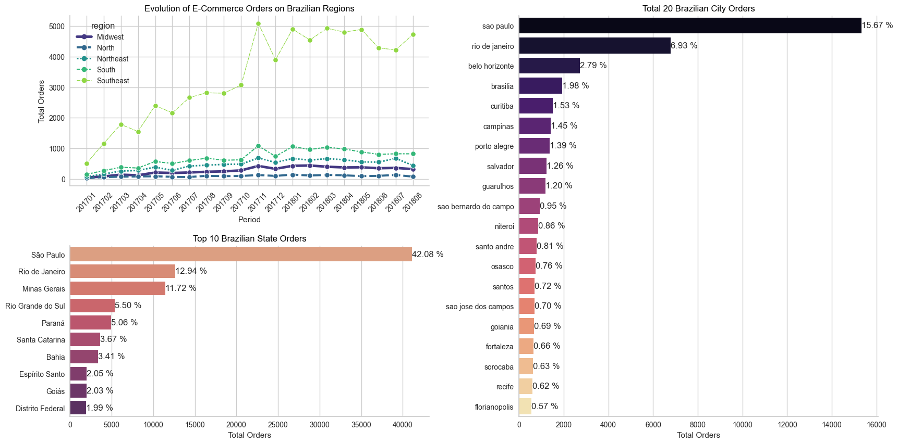
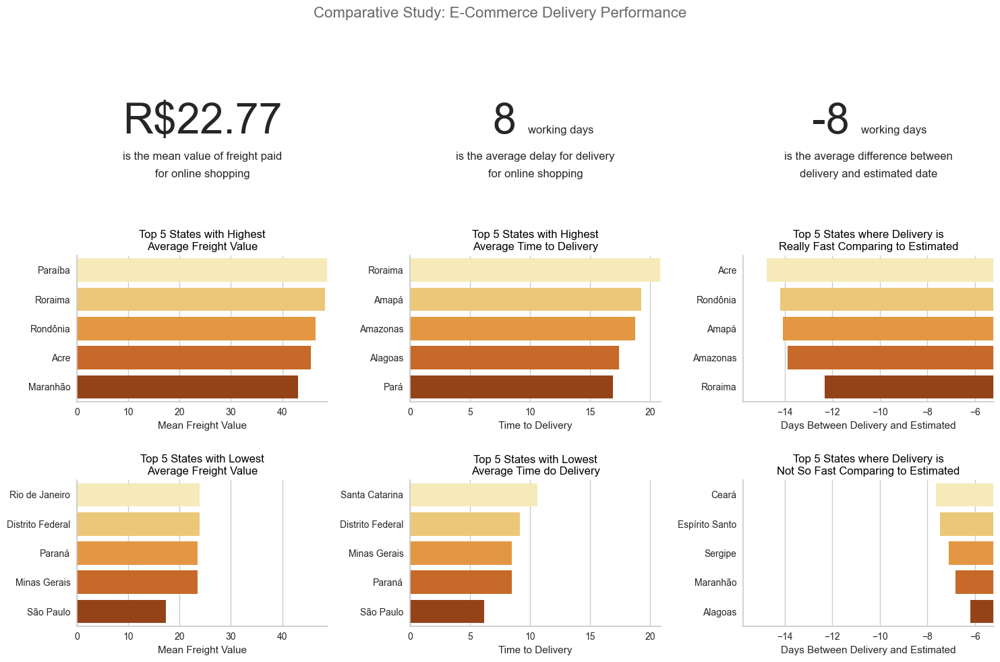
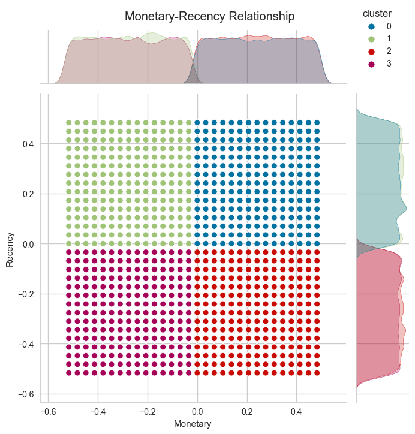
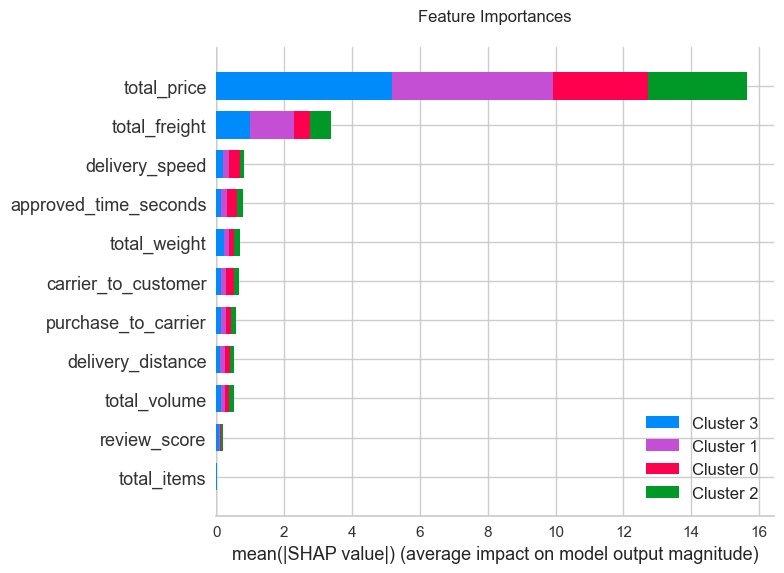

Business Understanding
Introduction
Olist, a Brazilian e-commerce marketplace integrator referred to their website, is an online e-commerce platform designed to facilitate direct sales on e-commerce sites of Brazil. The company's platform connects entrepreneurs with major online retailers and allows shopkeepers to advertise and sell in the marketplaces without complication, enabling retail companies to reach out to the international marketplaces, improve the shopping experience and modify their purchasing behavior.
Olist connects small businesses from all over Brazil to channels without hassle and with a single contract. Those merchants are able to sell their products through the Olist Store and ship them directly to the customers using Olist logistics partners. After a customer purchases the product from, a seller gets notified to fulfill that order. Once the customer receives the product, or the estimated delivery date is due, the customer gets a satisfaction survey by email where he can give a note for the purchase experience and write down some comments.
Context
The dataset has information of 100k orders from 2016 to 2018 made at multiple marketplaces in Brazil. Its features allows viewing an order from multiple dimensions: from order status, price, payment and freight performance to customer location, product attributes and finally reviews written by customers.
Problem Statements
Olist have collected data throughout the year, the data contains seperated information, there are aggregated data, unique data or even combination of both. With olist current dataset, it is hard to identify customer behaviour since it has no representation of customer segments. Moreover, even after understanding the segmentation, what kind of approach should they take?
Hence, the questions to be answered in this project:
- Is there any growing trend on e-commerce sales in Brazil?
- How the total sales is concentraded in brazilian states?
- What are the best states to do transaction in Brazil?
- How payments types can take influence on e-commerce?
- How are the behaviour of our customer?
- How would you classify them?
- How CRM campaign strategy be implemented?
Objective
With this project, it is hoped that Olist will be able to classify their customers with the appropriate segmentation.
Project Limitation
The machine learning model built is limited to orders from 2016 to 2018. Thus, the performance of the model will be much different when used to classify customers from today. In addition, this model is built from several selected features based on features importance and correlation analysis to the target.
Analytical Approach
Underlying the problem statements, our main focus lies around the implementation of CRM Campaign, the analytical approach we use are:
- Customer Segmentation by Clustering.
- Clusters Classification.
Data Understanding
Data Scheme
There are nine sets of data provided at the expense of Olist E-Commerce which are freely accessible for the research purposes. Please directly go through this link for data sets information. As merging process based-on data schemes shown above, we inherited three data sets named as Order History, Customer Payments, and Recency-Frequency-Monetary Table.
Exploratory Data Analysis
Evolution of Total Orders in Brazilian E-Commerce

Insights:
- There is no record on November 2016 and incomplete records on September 2018. The highest orders received in 1 month is on November 2017.
- Based on total orders by the day of week, Monday and Tuesday are the most transaction happened in a week with 16.29% and 16.05% from total.
- In total orders by time of the day, it can be seen that afternoon is the most transaction happened in a day with 38.29% from total. This may happen because more customers have free time during the lunch breaks. The second most is during night while customers have more free time after all day work.
Total Orders Comparison Between 2017 and 2018 (Q1-Q3)

Insights:
- Based on comparison plot above, it can be seen that there was an increase in orders of 136.52% between January and August in 2017 to January and August in 2018. This might happen because many new customers are transacting on Olist in 2018. Therefore, this case should be investigated further in modelling.
Evolution of E-Commerce Orders on Brazilian Regions
Insights:
- Based on Evolution of E-Commerce Orders on Brazilian Regions plot, it can be seen that Brazil is divided into 5 major regions, where the South East is the region with the fastest evolution of e-commerce orders from January 2017 to August 2018. Meanwhile Sao Paulo and Rio de Janeiro from South East region are also in the 1st and 2nd place for top orders in each states and cities.
Evolution of E-commerce: Total Orders and Total Amount Sold in R$

Insights:
- The highest value sold in history is on November 2017. It's possible that this can be happen when the blackfriday event is held, where each store probably gives a massive discount that only happens for 1 day. The value is 1001.9K just for 1 month.
- The total amount between January and August in 2017 to January and August in 2018 is also increased 137.04% where Evolution of Average Freight Value tend to be stable from January 2017 to May 2018. A sharp increase occurred in the July 2018. This might be happened because many new customer come to use Olist as their daily e-commerce to do shopping.
Comparative Study: E-Commerce Delivery Performance
Insights:
- The mean value of freight paid is R$22.77 yet there are still many states that must paid more for freight value above R$40. The top 5 are Paraiba, Roraima, Rondonia, Acre, and Maranhao.
- Even Roraima State is also in top 2 of 5 states with highest average time to delivery. This needs to be discussed further between the Olist team, so the freight value can be adjusted and each customer gets the best delivery service at the right price.
Evolution of Payment Types in Brazilian E-Commerce

Insights:
- Based on 3 plot above, it can be seen that credit card is the most preferred payment choice by customers with 73.99% from total. The evolution of payment types with credit card is also increasing rapidly from January 2017 to May 2018. Many customers also preffered to take 1 month payment installments. This indicates that payment with a credit card, customers do not need to immediately pay in full for the products they buy. They can pay it with installments they preffered and can be paid at the end of the periods.
- The most payment installments that customer preffered is 1. It indicates that many customers buy products that are not too expensive and are still able to be paid at the end of the first month.
Customer Segmentation by Clustering
Based on the result of the clustering, we can conclude:
-
Class 0 : High Monetary & High Recency
- One of our old customer with the trust to spend high.
- Type of customer that goes through our e-commerce when they want to buy high value products.
-
Class 1 : Low Monetary & High Recency
- Customers that are getting out of our e-commerce with low spending.
- The type of customer that tries our e-commerce and may end up not liking it.
-
Class 2 : High Monetary & Low Recency
- Recent and high spending customer with trust to spend more.
- This type of customer is the customer we want to retain since it is our best customer.
-
Class 3 : Low Monetary & Low Recency
- Fresh customers whose spending is not as much as Class 0 and Class2.
- Type of customer that loves shopping and buying small things.
Clusters Classification
Feature Importances
Based on feature importances quantified by SHAP value or Shapley, the two most important features are total_price and total_freight. Meanwhile, other features seem to have insignificant impacts on model output as shown above. This result does not imply the correlation nor the relationship of the features to the output, merely the significance power of the features to the output itself.
Explainable AI for Cluster 0
Feature of total_price has positive contributions for a model to predict an observation as Cluster 0. It means the higher the total_price, the higher the possibily of an observation to be predicted as Cluster 0. The leftovers are insignificant yet they do still have varied contributions in each feature.
Explainable AI for Cluster 1
Feature of total_price has negative contributions for a model to predict an observation as Cluster 1. It means the higher the total_price, the less the possibily of an observation to be predicted as Cluster 1. The leftovers are insignificant yet they do still have varied contributions in each feature.
Explainable AI for Cluster 2
Feature of total_price has positive contributions for a model to predict an observation as Cluster 2. It means the higher the total_price, the higher the possibily of an observation to be predicted as Cluster 2. The leftovers are insignificant yet they do still have proportional contributions in each feature.
Explainable AI for Cluster 3
Feature of total_price has negative contributions for a model to predict an observation as Cluster 3. It means the higher the total_price, the less the possibily of an observation to be predicted as Cluster 3. The leftovers are insignificant yet they do still have proportional contributions in each feature.
Conclussion & Actionable Recommendation
Conclussion
- There is a growing trend on e-commerce sales in Brazil when the total amount sold between 2017 to 2018 is increased to 137.04%. The highest value sold in history was on November 2017 with 1001.9K just for 1 month. This could be happen because the blackfriday event is held on that month, where each sellers probably gives a massive discount that only happens for 1 day.
- The biggest mean price by customer state is Paraiba with R$215, but the amount price tend to be low with just R$113.40K. Inversely proportional to Sao Paulo where the mean price is lowest, but had the biggest amount price comparing to another states with R$5172.26K. This is how total sales is concentraded in Brazil.
- The Best states to do transaction in Brazil is Sao Paulo, where this state dominates the total orders of all Brazilian states by 42.8% from total.
- The credit card is the most preferred payment choice by customers with 73.99% from total. The evolution of payment types with credit card is also increasing rapidly from January 2017 to May 2018. Many customers also preffered to take 1 month payment installments. This indicates that payment with a credit card, many customers do not need to immediately pay in full for the products they bought. They can pay it with installments they preffered and can be paid at the end of the periods. Vouchers can also be used for payments, with this, customers can get discounts for the products that they bought and add more products to buy. This is how payment types can take influence on e-commerce.
-
Based on the clusters, we conclude that it is divided by 4 groups of customer, which is:
- Class 0 : Type of customer with trust on spending only on high value products.
- Class 1 : Type of customer that are potentially high to churn.
- Class 2 : The best customer, spend more on a recent timeline.
- Class 3 : Type of customer that loves shopping for small things.
Recommendation
-
Class 0: Old High-Value Customer
Goal: Draw Interest
How:- Focus on building customer retention by giving discount on high value items.
- Provide excellent customer service and ensure a seamless shopping experience for their high-value transactions.
- On-time delivery guarantee, late delivery will result in a free shipment in the next purchase.
- Create an appealing and user-friendly experience for the customer.
- Give a better shipping services, by live tracking of shipment.
-
Class 1: Potential Churners
Goal: Draw Interest & Increase Spending
How:- Customer re-enggagement by giving an old user promotion to draw back to use the e-commerce.
- Collect feedback from these customers to understand their concerns or issues and address them promptly.
-
Class 2: Best Customer
Goal: Retain & if possible increase
How:- Giving promotion on all items include the lower or higher value products.
- Provide points and rewards to incentivize repeat purchases.
-
Class 3: Fresh Shopper
Goal: Increase Spending
How:- Implement strategies to increase their average order value by offering bundle deals.
- Give a first-timer promotion like free shipping for a whole month.
- Provide a detailed purchasing process which with easy to use shopping cart and multiple payment option.
- Show product recommendation by previous purchase.
Please find detailed of this project on My Github.